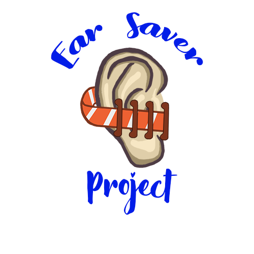

To request your free ear savers...
|  |
We are a group of volunteers across the US including the Volunteer State working to equip frontline medical professionals with 3D printed resources to improve their quality of life during this unprecedented pandemic at no cost to them. As of early May 2020, we have delivered approximately $7,000 worth of ear savers to 80+ different hospitals and other medical offices across 14 states! |